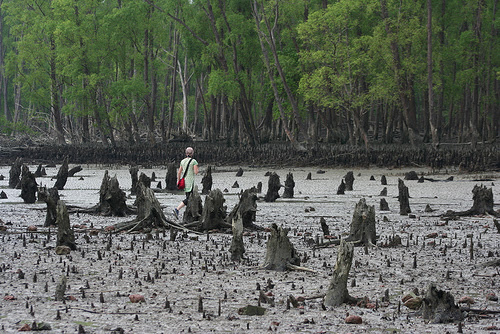

Amitav Ghosh's "The Hungry Tide" is a fascinating story set in the Sundarbans, a vast area of islands and tidal rivers at the mouth of the Ganges. This beautiful but dangerous place is the setting for a story about identity, history, and our relationship with nature.
The book follows two main characters: Piya Roy, a marine biologist who comes to the Sundarbans to study the rare Irrawaddy dolphins, and Kanai Dutt, a translator who visits his aunt and discovers an old notebook written by his late uncle. As Piya studies the dolphins, Kanai reads the notebook and learns about a sad part of the Sundarbans' history.
The book explores how people and nature must coexist in the fragile environment of the Sundarbans. Natural disasters and human activities show how delicate this balance is. The novel highlights the importance of remembering and learning from past events like the Morichjhanpi massacre to understand better and deal with present issues. Amitav Ghosh shows the differences between city and rural life through the characters' interactions, emphasising the need for understanding and cooperation. The story emphasizes how everything is connected—the dolphins, the people, and the environment—showing that all parts must be considered together. Piya and Kanai both seek to understand themselves better. Piya reconnects with her Indian heritage, while Kanai finds new meaning in his family's past.
Amitav Ghosh's writing vividly describes the Sundarbans, capturing their beauty and dangers. The characters are well-developed and face personal growth throughout the story. The book's structure, alternating between past and present, keeps readers engaged and weaves a rich, immersive tale.
"The Hungry Tide" is a compelling exploration of how humans fit into the natural world. It highlights the power of memory, the need to respect nature, and the strength of the human spirit. Amitav Ghosh's storytelling makes this novel a must-read for those interested in environmental and historical fiction and the complexities of human identity.
